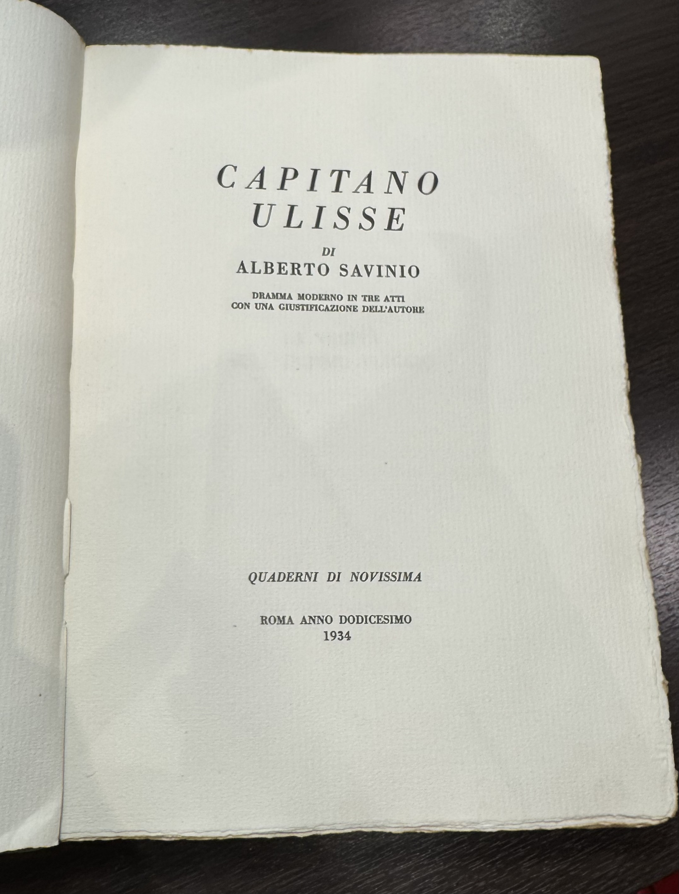

Page 1
Capitano Ulisse Capitan UlisseNot present in this version…
- Ulisse
- Ulisse

Porca miseria!
Dio pappafico!
Madonna piè di pollo! Anche Alessandra“Alessandra„ ci si mette… Boh!... O fumare o morire.
Dio bompresso e libeccioso… Cenere! cenere!... Chi dice cenere dice zero.
Nulla! Nemmeno il chicco di grazia che si dà ai condannati. Dio sprofondi l’isola di Circe!
BuonaseraSalute a lei, maestro.
Chi parla?
Dica un po lei, le è capitato mai vedersidi vedersi spuntare tabacco sul cranio?
Non le permetto!...
Peccato! Più facile vederlo spuntare làNo?.. Peccato! Era più facile vederlo spuntare sul suo cranio , che in questo sacramentatissimo paese.
Ma… ha cercato bene?
(Ammansito) Ha cercato bene?
Che vuol cercare! Fame, sete, rabbia di fumare!...fumare: crepare bisogna!
Anche la fame e la sete?
Provi a sfamarsi lei con gelatine, soufflés, sgonfiotti, spumoni e altre porcherie di questo genere: roba trasparente come celluloide, tremolante come le
cosce dei cavalli: ti nausea prima di saziarti. Hai sete? Di vino qui non si parla: questa bella gente pasteggia con liquori, rosolii, sciroppi… possa andare in bocca al pescecane! Nemmeno l’acqua ti dànno. Ma che acqua! Acqua di seltz che anziché levartelalevarla , mette più sete di prima!
Capisco bene… ma un po di sopportazione, che diamine!pazienza ci vuole , che diamine! un po di sopportazione…
Sfido io! Lei viene qui la sera, si sdraia in poltrona, è padrone di restare, andarsene, fare il suo porco comodo… tutti i suoi comodacci… Provi un po a mettersi nei miei panni.
Disturbiamo, maestro? Stavi conversando:Stavi parlando: continua.
Non ricevo ordini da nessuno: da te bel rondone, meno che meno.
Come la pigliamo dall’alto!Come la pigliamo dall’alto! E che v’è capitato, maestro, che siete pieno d’umore paradisiaco?
Non ci badi: è un po irritatoChe vuole! è un po irritato perché la pipa non tira.
Alessandra non tira?La mia pipa non tira? Sarà lei che non tira!... Ma sentilo questo: “Alessandra„ non tira!
“Alessandra„? qu’est-ce que c’est que ça, my dear?
Dillo te, dillo te come sai tirare se ti si mette anche un pizzicoun solo pizzico di tabacco nel
ventricino nero!
Che avete da ridere macachi?
Si volta
inviperito.
(Si volta, inviperitissimo) Che avete da
ridere macachi?
Guarda come parli!
Calma, calma, signori.
Non avrebbe per caso un po di tabacco?
Non avrebbe per caso un po di tabacco da dargli?
lo placherebbe subito.
Tenez mio povero signore, Muratti’sMurattysbout doré.
A me… a me queste porcheriole?...
Va! Pussa via, smorfiosa.
O shocking!
Quanto è grossierquesto vostro amico. Andiamo via! Andiamo via!

L’ha guardata bene quella bertuccia
Già! un po affettata, smancerosa…
Tutte a questo modo, a cominciare dalla padrona.
Che vuole? Donne moderne.Che vuole? Sono fatte così: donne moderne.
Moderne? Donne schife, dico io. Vedesse poi la villa, quei salotti! Non c’è nemmeno da sedersi: cuscini sparsi per terra, poufs che se ti ci metti su vai a gambe per aria, tende nere sulle quali scolano lacrime d’argento, luci velate che ti fissano dagli angoli come occhi di gatto, e un puzzo d’incenso dappertutto… che ti torce lo stomaco. Vuol sapere cos’è quest’isola? Glie lo dico io: è la sede dell’estetismo. Tutto vacuo, falso, artificiale. Lo stesso mare qui intorno… Ha mai veduto il mare lei, quello vero?lo stesso mare… Ha mai visto il mare lei, quello vero?
Come no!
Allora sa com’è: l’onda che si butta sulla riva, poi

torna indietro solo per scagliarsi un’altra volta. Il mare nemico della terra, avversario indomabile. Il mare che assalta la terra e vuole invaderla notte e giorno. Il mare insomma, con la sua vita propria, la sua oscura, ostinatissima volontà, le sue passioni, le sue scemenze…
E questo invece?
Diversissimo! Un’altra cosa. Non più avversario, ma alleato fedelissimo della terra. Implicati entrambi nella stessa subdola complicità.stessa perfida complicità Un mare senza volontà, senza individualità – si figuri, lui, l’individualista per eccellenza! Un mare emanazione della terra. La terra che muta sostanza e si prolunga.
Come mai?
Mah… Io dico che anche gli elementi sono corrotti qui intorno… E la varietà? Quella costante, inesauribile varietà del mare; quel suo continuo cambiare faccia,vestito, sguardo: quei suoi umori mutabilissimi nei quali io – nato sul mare, cullato dalle maree, cresciuto sulle creste delle onde – non sono riuscito
ancora, vecchio come mi vede, a capirci nulla; qui invece…
Calmo?
Come si fa a dire calmo? Morto… Ma neppure. Perché si muove, non è